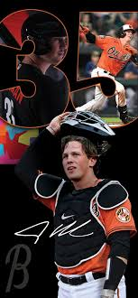

Adley Rutschman (born Feb. 6, 1998) is an elite American professional baseball catcher for the Baltimore Orioles, known for being the 2019 #1 overall draft pick and a cornerstone of the team's rebuild. A switch-hitter, he debuted in 2022, is a two-time All-Star, and a finalist for the 2022 AL Rookie of the Year.
